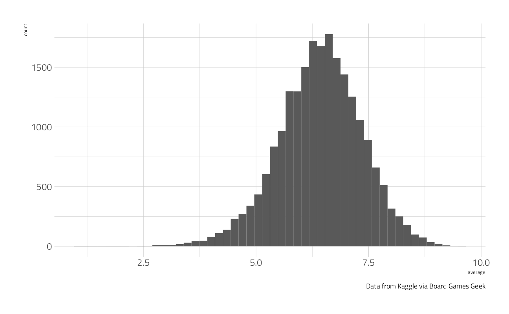
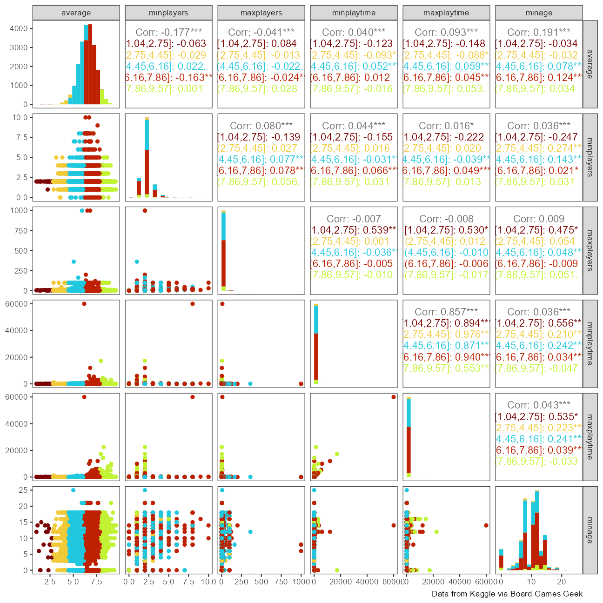
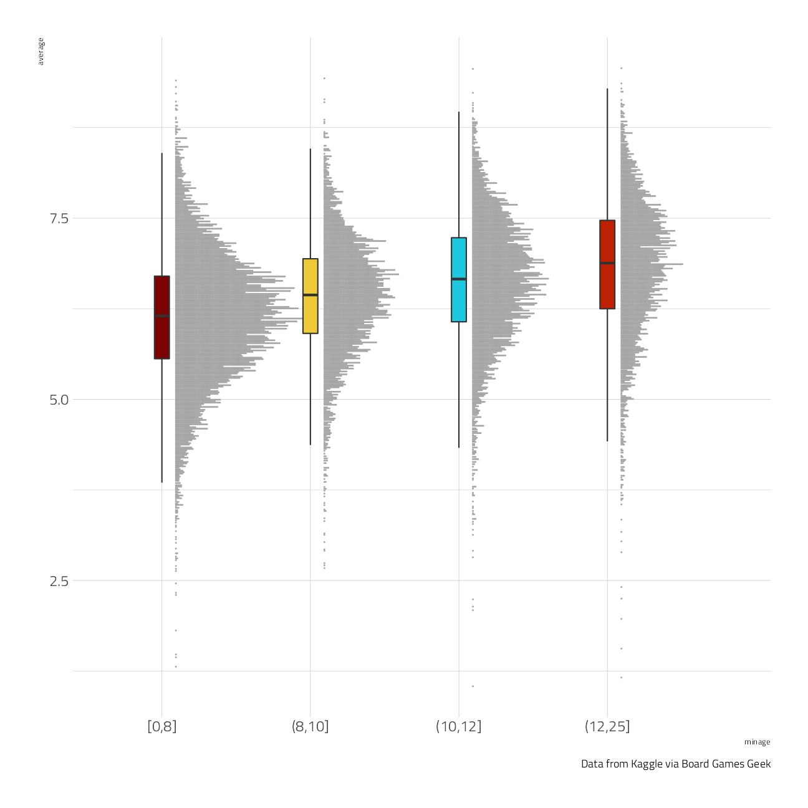
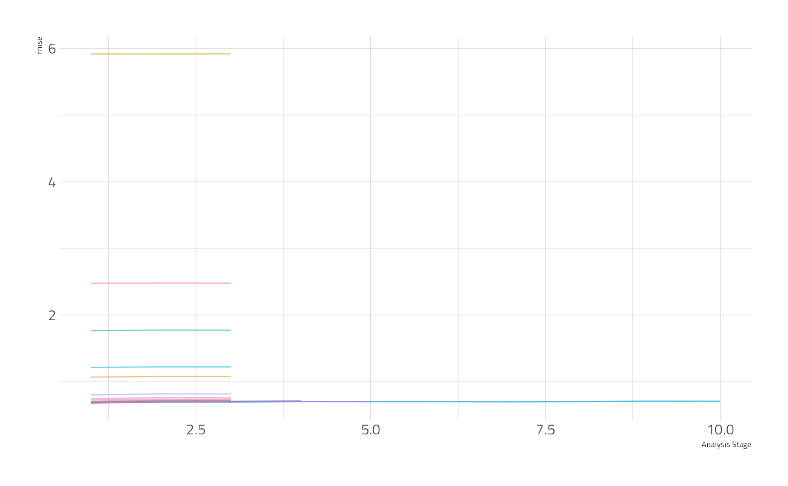
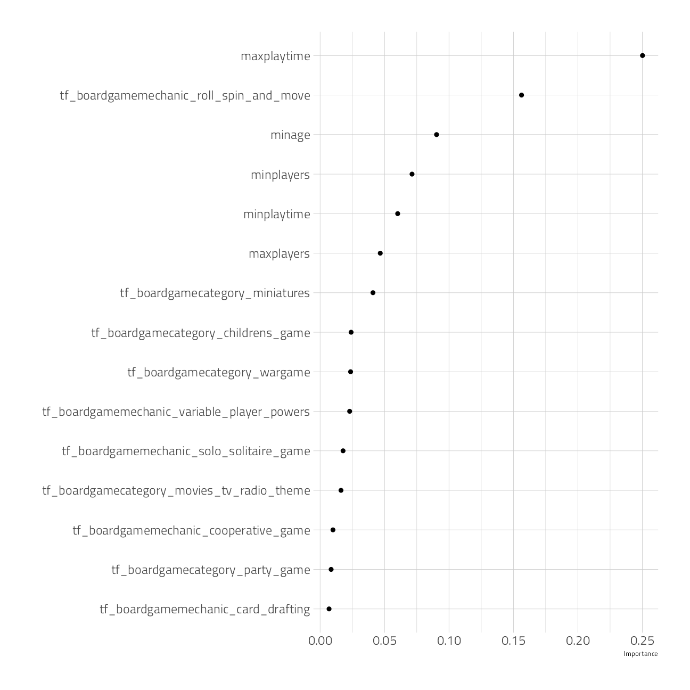
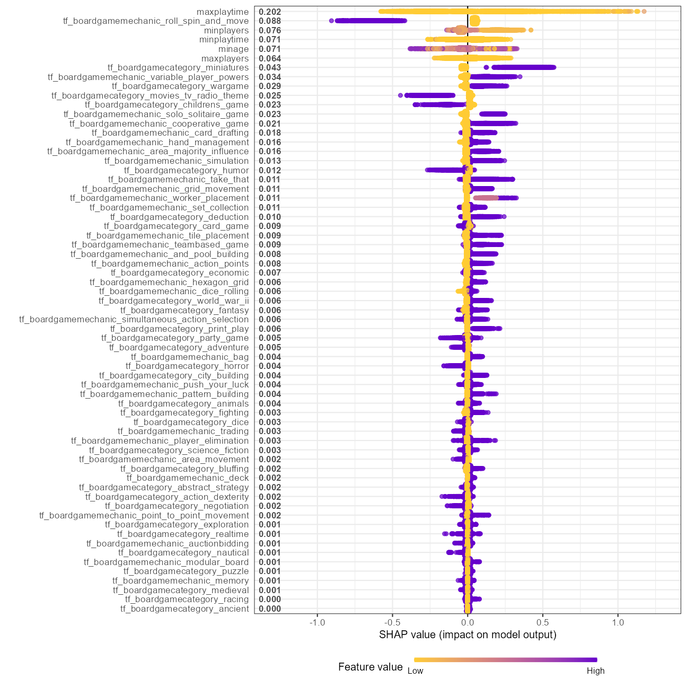
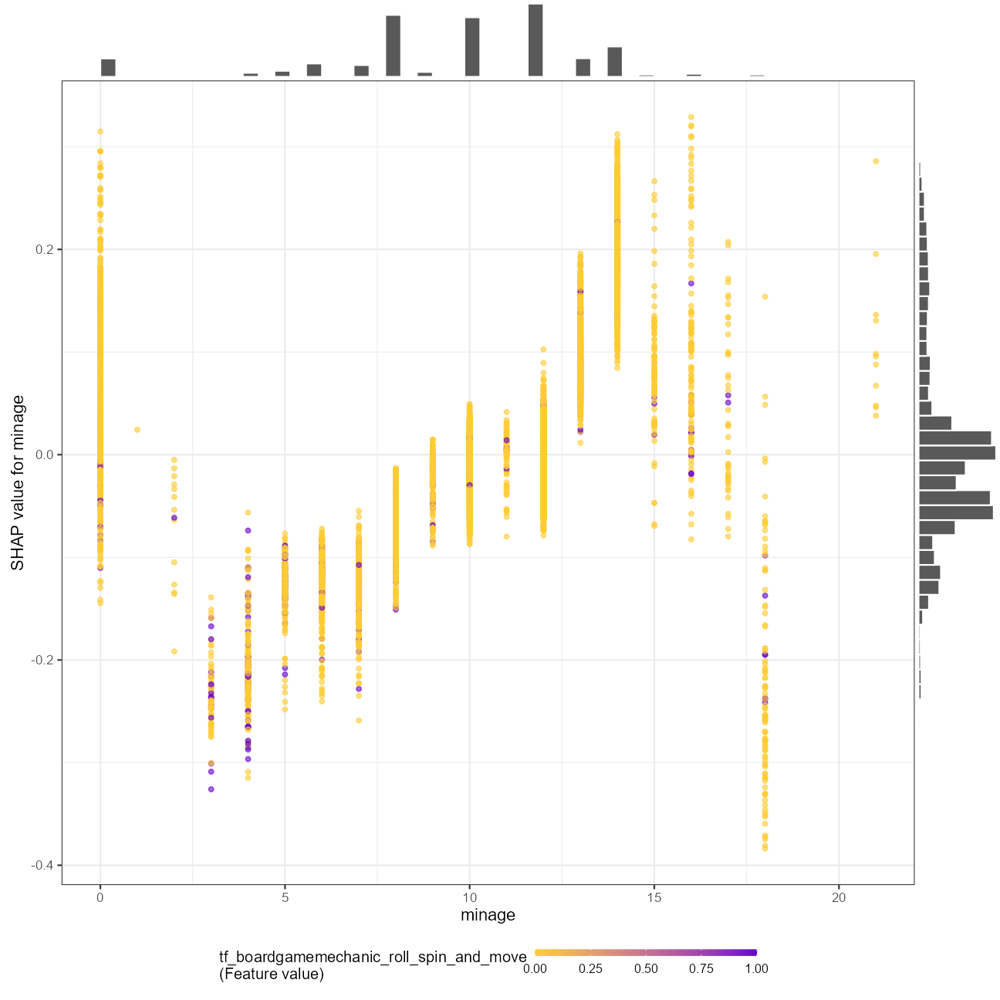

Last updated: 2022-01-29
Checks: 7 0
Knit directory: myTidyTuesday/
This reproducible R Markdown analysis was created with workflowr (version 1.7.0). The Checks tab describes the reproducibility checks that were applied when the results were created. The Past versions tab lists the development history.
Great! Since the R Markdown file has been committed to the Git repository, you know the exact version of the code that produced these results.
Great job! The global environment was empty. Objects defined in the global environment can affect the analysis in your R Markdown file in unknown ways. For reproduciblity it’s best to always run the code in an empty environment.
The command set.seed(20210907) was run prior to running the code in the R Markdown file. Setting a seed ensures that any results that rely on randomness, e.g. subsampling or permutations, are reproducible.
Great job! Recording the operating system, R version, and package versions is critical for reproducibility.
Nice! There were no cached chunks for this analysis, so you can be confident that you successfully produced the results during this run.
Great job! Using relative paths to the files within your workflowr project makes it easier to run your code on other machines.
Great! You are using Git for version control. Tracking code development and connecting the code version to the results is critical for reproducibility.
The results in this page were generated with repository version ba2b778. See the Past versions tab to see a history of the changes made to the R Markdown and HTML files.
Note that you need to be careful to ensure that all relevant files for the analysis have been committed to Git prior to generating the results (you can use wflow_publish or wflow_git_commit). workflowr only checks the R Markdown file, but you know if there are other scripts or data files that it depends on. Below is the status of the Git repository when the results were generated:
Ignored files:
Ignored: .Rhistory
Ignored: .Rproj.user/
Ignored: catboost_info/
Ignored: data/2021-11-27/
Ignored: data/2021-11-27glm_wf_final.rds
Ignored: data/CNHI_Excel_Chart.xlsx
Ignored: data/CommunityTreemap.jpeg
Ignored: data/Community_Roles.jpeg
Ignored: data/YammerDigitalDataScienceMembership.xlsx
Ignored: data/accountchurn.rds
Ignored: data/acs_poverty.rds
Ignored: data/advancedaccountchurn.rds
Ignored: data/airbnbcatboost.rds
Ignored: data/austinHomeValue.rds
Ignored: data/austinHomeValue2.rds
Ignored: data/australiaweather.rds
Ignored: data/baseballHRxgboost.rds
Ignored: data/baseballHRxgboost2.rds
Ignored: data/fmhpi.rds
Ignored: data/grainstocks.rds
Ignored: data/hike_data.rds
Ignored: data/nber_rs.rmd
Ignored: data/netflixTitles2.rds
Ignored: data/pets.rds
Ignored: data/pets2.rds
Ignored: data/spotifyxgboost.rds
Ignored: data/spotifyxgboostadvanced.rds
Ignored: data/us_states.rds
Ignored: data/us_states_hexgrid.geojson
Ignored: data/weatherstats_toronto_daily.csv
Ignored: gce-key.json
Untracked files:
Untracked: code/YammerReach.R
Untracked: code/work list batch targets.R
Unstaged changes:
Modified: code/_common.R
Note that any generated files, e.g. HTML, png, CSS, etc., are not included in this status report because it is ok for generated content to have uncommitted changes.
These are the previous versions of the repository in which changes were made to the R Markdown (analysis/2022_01_28.Rmd) and HTML (docs/2022_01_28.html) files. If you’ve configured a remote Git repository (see ?wflow_git_remote), click on the hyperlinks in the table below to view the files as they were in that past version.
| File | Version | Author | Date | Message |
|---|---|---|---|---|
| Rmd | ba2b778 | opus1993 | 2022-01-29 | first full commit of Board Games |
| html | 60ca414 | opus1993 | 2022-01-29 | Build site. |
| Rmd | 231678b | opus1993 | 2022-01-28 | wflow_publish("analysis/2022_01_28.Rmd") |
This week’s #TidyTuesday dataset is on Board Games, provided by Alyssa Goldberg.
Let’s build up some examples data visuals to showcase for ourselves here, and the make a machine learning model. I am going to follow Julia Silge’s post, here, as a starting point. First, load up packages:
suppressPackageStartupMessages({
library(tidyverse) # clean and transform rectangular data
library(tidymodels)
library(tidytext)
library(textrecipes)
library(finetune)
library(vip)
library(SHAPforxgboost)
library(grumanlib) # my plot theme
})
source(here::here("code","_common.R"),
verbose = FALSE,
local = knitr::knit_global())
ggplot2::theme_set(theme_jim(base_size = 12))Lets load up the data
tt <- tidytuesdayR::tt_load("2022-01-25")
Downloading file 1 of 2: `details.csv`
Downloading file 2 of 2: `ratings.csv`ratings_joined <- tt$ratings %>%
left_join(tt$details, by = "id") %>%
select(name, average, matches("min|max"), boardgamecategory, boardgamemechanic)
caption <- "Data from Kaggle via Board Games Geek"We are going to focus on the adjusted average figure instead fo the bayes_average that applies an empirical bayes correction towards the group average for games with few observations, just as in baseball where a rookie pitcher should be reported with more of a group average than his personal stats.
Our modeling goal is to predict ratings for board games based on the main characteristics like number of players and game category. How are the ratings distributed?
ratings_joined %>%
ggplot(aes(average)) +
geom_histogram(bins = 50) +
labs(caption = caption)
Let’s look at a couple of other possible numeric correlations:
ratings_joined %>%
select(
average,
matches("min|max")
) %>%
GGally::ggpairs(
mapping = aes(color = cut_interval(average, 5)),
progress = FALSE,
diag = list(continuous = GGally::wrap("barDiag", bins = 20))
) +
theme_bw() +
theme(panel.grid = element_blank()) +
labs(caption = caption)
Ratings here are bounded and always positive. This is a pretty sizable rectangular dataset so let’s use an xgboost model. How is a characteristic like the minimum recommended age for the game related to the rating?
ratings_joined %>%
filter(!is.na(minage)) %>%
mutate(minage = cut_number(minage, 4)) %>%
ggplot(aes(minage, average, fill = minage)) +
ggdist::stat_dots(
side = "top",
justification = -0.1,
show.legend = FALSE
) +
geom_boxplot(
width = 0.1,
outlier.shape = NA,
show.legend = FALSE
) +
labs(caption = caption)
This kind of relationship is what we hope our xgboost model can use.
Let’s start our modeling by setting up our “data budget.” We’ll subset down to only variables like minimum/maximum age and playing time, and stratify by our outcome average.
set.seed(123)
game_split <-
ratings_joined %>%
na.omit() %>%
initial_split(strata = average)
game_train <- training(game_split)
game_test <- testing(game_split)
set.seed(234)
game_folds <- vfold_cv(game_train, strata = average)Next, let’s set up our feature engineering. Sometimes a dataset requires more care and custom feature engineering; the tidymodels ecosystem provides lots of fluent options for common use cases and then the ability to extend our framework for more specific needs while maintaining good statistical practice.
split_category <- function(x) {
x %>%
str_split(", ") %>%
map(str_remove_all, "[:punct:]") %>%
map(str_squish) %>%
map(str_to_lower) %>%
map(str_replace_all, " ", "_")
}
game_rec <-
recipe(average ~ ., data = game_train) %>%
update_role(name, new_role = "id") %>%
step_tokenize(boardgamecategory, custom_token = split_category) %>%
step_tokenfilter(boardgamecategory, max_tokens = 30) %>%
step_tf(boardgamecategory) %>%
step_tokenize(boardgamemechanic, custom_token = split_category) %>%
step_tokenfilter(boardgamemechanic, max_tokens = 30) %>%
step_tf(boardgamemechanic)Now let’s create a tunable xgboost model specification, with only some of the most important hyper parameters tunable, and combine it with our preprocessing recipe in a workflow(). To achieve higher performance, we could try more careful and/or extensive choices for hyperparameter tuning.
xgb_spec <-
boost_tree(
trees = tune(),
mtry = tune(),
min_n = tune(),
learn_rate = 0.005
) %>%
set_engine("xgboost") %>%
set_mode("regression")
xgb_wf <- workflow(game_rec, xgb_spec)To speed up computation we will use a parallel backend.
all_cores <- parallelly::availableCores(omit = 1)
all_coressystem
11 future::plan("multisession", workers = all_cores) # on WindowsNow we can use tune_race_anova() to eliminate parameter combinations that are not doing well.
set.seed(2022)
xgb_game_rs <-
tune_race_anova(
xgb_wf,
game_folds,
grid = 20,
control = control_race(verbose_elim = TRUE)
)We can visualize how the possible parameter combinations we tried did during the “race.” Notice how we saved time by not evaluating the parameter combinations that were clearly doing poorly on all the resamples; we only kept going with the good parameter combinations.
plot_race(xgb_game_rs)
We ended up with three hyperparameter configurations in the end, all of which are pretty much the same.
show_best(xgb_game_rs)Let’s use last_fit() to fit one final time to the training data and evaluate one final time on the testing data.
xgb_last <-
xgb_wf %>%
finalize_workflow(select_best(xgb_game_rs, "rmse")) %>%
last_fit(game_split)An xgboost model is not directly interpretable but we have several options for understanding why the model makes the predictions it does.
Let’s start with model-based variable importance using the vip package.
xgb_fit <- extract_fit_parsnip(xgb_last)
vip(xgb_fit, geom = "point", num_features = 15)
The maximum playing time, roll/spin/move mechanics, and minimum age are the most important predictors driving the predicted game rating.
We can also use a model-agnostic approach like Shapley Additive Explanations, where the average contributions of features are computed under different combinations or “coalitions” of feature orderings. The SHAPforxgboost package makes setting this up for an xgboost model particularly nice.
We start by computing what we need for SHAP values, with the underlying xgboost engine fit and the predictors in a matrix format.
game_shap <-
shap.prep(
xgb_model = extract_fit_engine(xgb_fit),
X_train = bake(prep(game_rec),
has_role("predictor"),
new_data = NULL,
composition = "matrix"
)
)We can look at an overall summary:
shap.plot.summary(game_shap)
Points to the right of zero increase the average rating, while points to the left decrease it.
Or we can create partial dependence plots for specific variables:
shap.plot.dependence(
game_shap,
x = "minage",
color_feature = "tf_boardgamemechanic_roll_spin_and_move",
size0 = 1.2,
smooth = FALSE, add_hist = TRUE
)
Learning this kind of complex, non-linear behavior is where xgboost shines.
sessionInfo()R version 4.1.2 (2021-11-01)
Platform: x86_64-w64-mingw32/x64 (64-bit)
Running under: Windows 10 x64 (build 22000)
Matrix products: default
locale:
[1] LC_COLLATE=English_United States.1252
[2] LC_CTYPE=English_United States.1252
[3] LC_MONETARY=English_United States.1252
[4] LC_NUMERIC=C
[5] LC_TIME=English_United States.1252
attached base packages:
[1] stats graphics grDevices utils datasets methods base
other attached packages:
[1] xgboost_1.5.0.2 vctrs_0.3.8 rlang_0.4.12
[4] grumanlib_0.1.0.9999 SHAPforxgboost_0.1.1 vip_0.3.2
[7] finetune_0.1.0 textrecipes_0.4.1 tidytext_0.3.2
[10] yardstick_0.0.9 workflowsets_0.1.0 workflows_0.2.4
[13] tune_0.1.6 rsample_0.1.1 recipes_0.1.17
[16] parsnip_0.1.7 modeldata_0.1.1 infer_1.0.0
[19] dials_0.0.10 scales_1.1.1 broom_0.7.11
[22] tidymodels_0.1.4 forcats_0.5.1 stringr_1.4.0
[25] dplyr_1.0.7 purrr_0.3.4 readr_2.1.1
[28] tidyr_1.1.4 tibble_3.1.6 ggplot2_3.3.5
[31] tidyverse_1.3.1 workflowr_1.7.0
loaded via a namespace (and not attached):
[1] utf8_1.2.2 R.utils_2.11.0 lme4_1.1-27.1
[4] tidyselect_1.1.1 grid_4.1.2 pROC_1.18.0
[7] munsell_0.5.0 codetools_0.2-18 ragg_1.2.1
[10] miniUI_0.1.1.1 future_1.23.0 withr_2.4.3
[13] colorspace_2.0-2 highr_0.9 knitr_1.37
[16] rstudioapi_0.13 ggsignif_0.6.3 listenv_0.8.0
[19] labeling_0.4.2 git2r_0.29.0 polyclip_1.10-0
[22] bit64_4.0.5 DiceDesign_1.9 farver_2.1.0
[25] rprojroot_2.0.2 parallelly_1.30.0 generics_0.1.1
[28] ipred_0.9-12 xfun_0.29 R6_2.5.1
[31] reshape_0.8.8 lhs_1.1.3 cachem_1.0.6
[34] assertthat_0.2.1 promises_1.2.0.1 vroom_1.5.7
[37] nnet_7.3-16 ggExtra_0.9 gtable_0.3.0
[40] globals_0.14.0 processx_3.5.2 timeDate_3043.102
[43] BBmisc_1.11 systemfonts_1.0.3 splines_4.1.2
[46] rstatix_0.7.0 selectr_0.4-2 checkmate_2.0.0
[49] yaml_2.2.1 abind_1.4-5 modelr_0.1.8
[52] backports_1.4.1 httpuv_1.6.5 tokenizers_0.2.1
[55] tools_4.1.2 lava_1.6.10 usethis_2.1.5
[58] ellipsis_0.3.2 jquerylib_0.1.4 RColorBrewer_1.1-2
[61] Rcpp_1.0.8 plyr_1.8.6 ps_1.6.0
[64] ggpubr_0.4.0 rpart_4.1-15 viridis_0.6.2
[67] haven_2.4.3 fs_1.5.2 here_1.0.1
[70] furrr_0.2.3 magrittr_2.0.1 data.table_1.14.2
[73] ggdist_3.0.1 reprex_2.0.1 GPfit_1.0-8
[76] SnowballC_0.7.0 whisker_0.4 R.cache_0.15.0
[79] xtable_1.8-4 mime_0.12 hms_1.1.1
[82] evaluate_0.14 readxl_1.3.1 gridExtra_2.3
[85] compiler_4.1.2 crayon_1.4.2 minqa_1.2.4
[88] R.oo_1.24.0 htmltools_0.5.2 later_1.3.0
[91] tzdb_0.2.0 lubridate_1.8.0 DBI_1.1.2
[94] tweenr_1.0.2 dbplyr_2.1.1 MASS_7.3-54
[97] boot_1.3-28 Matrix_1.3-4 car_3.0-12
[100] cli_3.1.1 R.methodsS3_1.8.1 parallel_4.1.2
[103] gower_0.2.2 pkgconfig_2.0.3 getPass_0.2-2
[106] xml2_1.3.3 foreach_1.5.1 bslib_0.3.1
[109] hardhat_0.2.0 tidytuesdayR_1.0.1.9000 prodlim_2019.11.13
[112] rvest_1.0.2 distributional_0.3.0 janeaustenr_0.1.5
[115] callr_3.7.0 digest_0.6.29 rmarkdown_2.11
[118] cellranger_1.1.0 curl_4.3.2 shiny_1.7.1
[121] nloptr_2.0.0 nlme_3.1-153 lifecycle_1.0.1
[124] jsonlite_1.7.3 carData_3.0-5 viridisLite_0.4.0
[127] fansi_1.0.2 pillar_1.6.5 lattice_0.20-45
[130] GGally_2.1.2 fastmap_1.1.0 httr_1.4.2
[133] survival_3.2-13 glue_1.6.0 conflicted_1.1.0
[136] iterators_1.0.13 bit_4.0.4 ggforce_0.3.3
[139] class_7.3-19 stringi_1.7.6 sass_0.4.0
[142] textshaping_0.3.6 memoise_2.0.1 styler_1.6.2
[145] future.apply_1.8.1